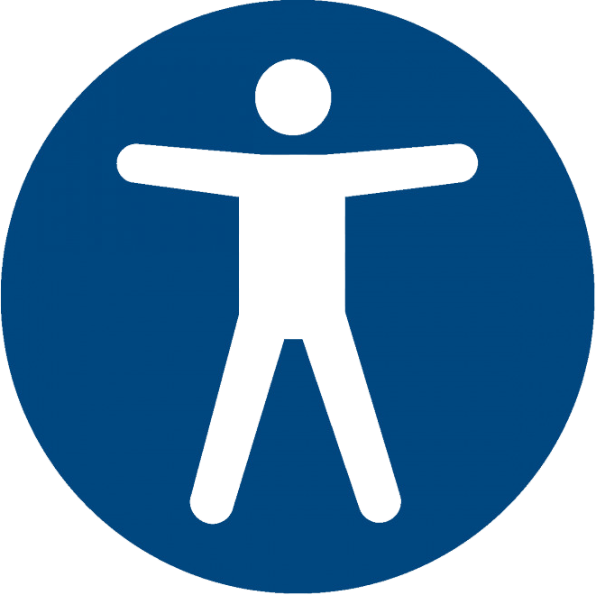

Accessibility Training
Accesssible Content
Making Your Web Content Inclusive for All
karma-dharma.github.io/accessible-content
Jaime Medvesky
Today's Topics
- Overview & Legal Terms
- Standards & Compliance
- Types of Disabilities
- Benefits of Accessibility
- Assistive Technologies
- Statistics for Literacy
- Why Reading Level Matters
- Best Practices for Web Content
- Best Practices for Digital Media
- Testing Your Content
- Questions & Answers
- Resources
"A11Y"

It's a number! ..It's a word!
...It's a Numeronym!
( a number-based word )
Abbreviation for "accessibility"
"A - eleven - Y" - ( or ) - "A - one - one - Y"
AccessibilitY
AccessibilitY
\/
( 11 letters )
↓
A11Y
A11y Overview
Accessibility - A concept that focuses on whether all users are able to access an equivalent user experience, however they encounter a product or service.1
Web Accessibility - The practice of making sure that websites and related tools can be used by everyone, however it's accessed and regardless of a person's ability or disability.
Inclusive Practices - considers the needs of individuals with diverse abilities and provides equitable access to information and resources.
Inclusive Content - Concept of writing content to be understandable and accessible to the greatest extent possible by everyone, regardless of age, ability, or status in life.
A11Y Legal Terms
ADA
Americans with Disabilities Act
- U.S. civil rights law prohibiting discrimination against people with disabilities by guaranteeing equal access to all areas of public life.
- Mandated by the Department of Justice (DOJ).
- Non-compliance means you could face a discrimination lawsuit.
- Title I - Employment
- Title II - Transportation
- Title III - Public accommodations
Section 508
Rehabilitation Act of 1973
- U.S. Federal law ensuring that people with disabilities have equal access to government information and services.
- Requires digital assets made or used by the federal government or with their funding be accessible.
- Companies that contract with federal government must also meet standards, or lose federal funding.
- 1998 - Section 508 is added to the Rehab Act of 1973 to incorporate digital a11y requirements.
- 2017 - Federal agencies and vendors must follow WCAG standards.
A11y Standards
WCAG
(Web Content Accessibility Guidelines)
- Global guidelines on how to make content accessible for all users.
- The most-referenced set of standards in accessibility lawsuits
- Original version (1.0) was released in May, 1999.
- 3 version updates:
2.0, 2.1, and 2.2 (October, 2023) - Developed by W3C:
(World Wide Web Consortium)
Organization that creates the main international standards organization for the Internet. - Published by WAI:
(Web Accessibility Initiative)
A project created to make the internet universally accessible.
WCAG Compliance
- Three (3) levels of conformance:
A
-The most basic, least strict level.
-Includes the most essential requirements.
25 success criteria
AA-The most desired level of compliance.
-Most websites should aim for Level AA conformance
(A) + 13 success criteria
AAA-Includes the most strict requirements.
-Some type of content unable to meet all success criteria.
(A) + (AA) + 23 success criteria
- Four (4) main principles : P - O - U - R
Perceivable
|
Must be available via sight, hearing and/or touch
Operable
|
Must be able to navigate with different input methods
Understandable
|
Must be readable, predictable, with clear instruction
Robust
|
Must work with a variety of assistive technologies, browsers, and devices
Types of Disabilities
-
 Visual Impairments
Visual Impairments
- Low Vision / Blindness
- Lost Glasses
- Sun Glare
-
 Hearing Impairments
Hearing Impairments
- Hard of Hearing / Deafness
- Ear Infection
- Loud environment
-
 Speech Impairments
Speech Impairments
- Non-verbal
- Laryngitis
- Heavy accent
-
Motor Disabilities
- Rheumatoid Arthritis
- Broken Arm
- Holding Baby
-
 Cognitive Disabilities
Cognitive Disabilities
- Epilepsy, Dyslexia, ADHD
- Brain Injury / Concussion
- Sleep-Deprived
The Persona Spectrum
~Infographic by Design Positive
Benefits of A11Y
- A11y benefits everyone!
-
 "Curb-cut Effect" - the phenomenon of disability-friendly features being used and appreciated by a larger group than the people they were designed for.
"Curb-cut Effect" - the phenomenon of disability-friendly features being used and appreciated by a larger group than the people they were designed for. - Did you know? - People with disabilities are the innovators and creators of many new technologies..
- Typewriter
- The Internet..!
- Audiobooks
- Speech-to-Text
- Phone Mounts
- Cruise Control
- Driverless Cars
- Electronic Toothbrushes
- Bendy Straws
- Can Openers
- The huddle! (as you see in football)
Company/Website Benefits
- Improve User Experience
- Enhance Search Engine Optimization (SEO)
- Increase Profitability
- Competitive Advantage
- Reach a Wider Audience
- Improve Reputation
- Increase Website Usability
- Meet Legal Requirements
- Demonstrate Ethical Responsibility
- Future-Proof Your Website
Assistive Technology (AT)
- Any device or software designed to assist people with disabilities in various aspects of their lives, such as accessing web content.
- Examples:
- Screen readers - JAWS or NVDA for (Windows), VoiceOver for (Mac and iOS)
- Magnifiers
- Voice Recognition
- Braille Displays
- Text-to-Speech Software
- Switch controls
- Adaptive Apps

The Screen Reader
- A software program that takes the on-screen text from a website or computer screen and reads it out loud for users with visual impairments.
- Allows for visual cues, such as images, graphics or table headers to be perceived when additional codes are provided within the document:
- Image alt tags
- Key landmarks
- Navigation headings
- Form labels
- Keyboard commands such as
[TAB],[SPACEBAR],[ENTER]are used to instruct the screen reader to perform actions such as read a word, a line or full screen of text, announce the location of the cursor or "focused" item, and more.
The Screen Reader Experience
Literacy Statistics
Let's look at some statistics for American adults...
9% - (23.2 million) do not have a high school diploma. (2022)2
54% - (140 million) are not able to read a book written at an eighth (8th)-grade level or above. (2018)3
21% - (54 million) have low levels of literacy and cannot take a written literacy assessment test. (2019)4
18% - (48 million) lack basic reading, writing, and math skills beyond a third (3rd)-grade level. (2023)5
4% - (10 million) are unable to read at all, and considered to be completely illiterate. (2017)6
7th-8th grade - The average American adult reading level7
Why Reading Level Matters
- Any written text that scores above the eighth (8th)-grade level will not be accessible to an average U.S. website visitor
- Consider those who struggle with longer words and sentences:
- English language learners
- People with reading disabilities
- Know your audience
- Write content for the reading level of your audience
- Understand that people learn in different ways8:
- 65% - visual learners
- 30% - auditory learners
- 5% - Kinesthetic learners - (need to engage/get involved)
Writing Accessible Content
General Writing Tips:
- Keep paragraphs short - (4-5 sentences maximum).
- Keep sentences concise, focusing on one idea - (20 words or less).
- Use clear, useful, inclusive, plain language content.
- Avoid jargon, slang, or complex terms:
"Submission received" vs. "We Got Your Feedback" - Inject creativity - add humor and wit; let your personality come through.
- Minimize adjectives and adverbs to only what's necessary.
- Use transition words to link ideas (e.g., "furthermore", "however", "therefore", "finally").
Structuring Your Content:
- Start with an outline - organize your main points before writing.
- Format consistently using style sheets, section headings, and bulleted lists.
- Apply a proper heading hierarchy, starting with one <
h1> per page.
Subheadings (<h2>, <h3>) should follow logically under it. - Avoid using heading tags for styling - instead, use a class:
<p class="h2"> - Break up text with headings to make content "skimmable".
- Replace paragraphs with bulleted or numbered lists where possible.
- Consider diverse backgrounds - race, gender, age, culture, language, ability.
Writing Accessible Content
Formatting & Best Practices:
- Avoid writing in ALL CAPS.
- Spell out special characters:
"1st" vs. "first" / "1pm - 3pm" vs. "1pm to 3pm" - Spell out abbreviations for the first reference and always spell out common abbreviations:
"NJ" to "New Jersey", or "Fri" to "Friday" - Avoid redundant links (e.g., don’t apply the same link to both an image and adjacent text).
- Avoid using phrases such as "click here" in link text.
Instead use descriptive link language that clearly explains the link’s destination or purpose:
"Explore our Products" vs. "click here to explore our products" - Tag all images with descriptive ALT text.
- Use visuals - imagery can transcend language and cultural barriers.
Enhancing Readability
- Use numbered or bulleted lists for clarity.
- Provide a simplified summary before or after key content, considering the "5 W's" (Who, What, Where, When, Why).
- Include transition words for smooth reading (e.g., "additionally", "however", "therefore").
- Provide a Table of Contents for easier navigation through longer content.
- Ask questions to engage readers and stimulate thought or conversation.
- Visual storytelling - paint a picture with your words to help readers envision your ideas.
Writing Accessible Content
Screen Reader & Assistive Technology Tips:
- Include <
screen-reader-text> after vague link descriptions (e.g., "Learn More" or "Click here") to describe the link's purpose. - Provide "skip links" when there's a large number of links before the main content (e.g., an A-Z glossary or a calendar with daily links).
- Use high contrast colors to ensure text and visuals stand out.
- Ensure form fields are properly labeled with <
label> tags and sub-labels are placed above input fields.
Balance Accessibility & Automation:
- Avoid being "overly accessible" - this can be just as problematic as being inaccessible.
- Avoid accessibility overlays - they rarely improve UX and interfere with other assistive technologies.
- Use automated tools like ChatGPT to simplify content, provide summaries, or create bullet points.
- Don’t rely solely on automated accessibility checkers - manual testing is essential for finding key issues.
Beware of Overlays

- An accessibility overlay is a JavaScript solution designed to address accessibility issues on a website or web app.
Disadvantages
- Don't fix accessibility issues, but instead they're
trying to mask it. - Don't protect you from an accessibility lawsuit.
- Can overwrite existing accessibility settings, hindering the accessibility of your site.
- Most users strongly dislike overlays.
- Slow down your website.
- There's no agreed upon format - they are all different.
- Our devices already have most of the features offered.
Accessible Images
- All images should include an image alt tag.
- Decorative images - add an <
alt> tag with an empty value:
<img src="/images/decorative.jpg" alt="">
- Non-decorative images - provide an
alttext description as it relates
to the content.For example: Article on King Henry III:
History article:
"King Henry VIII of England looking stern and wearing lavish royal clothing."Fashion article:
"King Henry VIII of England wearing a fur-trimmed hat and cape, and bedazzled silver and gold jewelry."
- Decorative images - add an <
SVGimages:- Decorative - apply <
aria-hidden="true"> - Non-decorative - add a <
title> to describe the image.
- Decorative - apply <
Accessible Audio & Video
- Avoid auto-playing audio/video.
- Provide controls to turn on video captions and subtitles (non-auditory), or transcriptions (non-visual).
- Make sure video controls are always available (also for image sliders that auto-play).
- Include descriptive captions.
- Incorporate audio descriptions for low-vision users (see video below).
- Add subtitles in video.
- Use YouTube's captioning services to add captions.
PDF/Electronic Docs
Document accessibility - ensures your electronic content (such as PDFs), is universally understandable, navigable, and barrier-free, regardless of your readers' abilities.
Common PDF Issues 9
- Structural flaws - Disorganized flows make it tough for people using assistive technologies to navigate and comprehend content
- Missing image alt text - Incomplete or lacking image descriptions in alt text exclude users with disabilities from experiencing images
- Text troubles - Un-selectable text in scanned documents or images hinders assistive technologies, reading, and searching
- Navigation nightmares - Broken or poorly labeled hyperlinks block users from moving through documents smoothly
- Unusable form fields - Lack of clear labeling for fields prevents form completion for all users, particularly those with disabilities
- Tables and lists - Malformed tables, without proper row and column headings, prevent users from navigating tabular data
How to Test Content
Automated Testing:
- WAVE - (Add-on or extension) - use
Details&Structuretabs to check for content issues. - Accessibility Checker - (Wordpress plugin) - highlights issues/errors on both the front-end of the site, and also in the back-end Editor while you are adding or editing content.
- Readability Test (FX Tools) - evaluates web page content and provides scores & breakdowns for the most-used readability indicators.
- Web Accessibility Testing Platform - Free Basic plan (1 site, 1 user), then monthly costs for higher level use.
- Testing Web Content for Accessibility
Manual Testing:
Screen-reader(NVDA, JAWS, Mac over IOS) - use with keyboard commands (<Tab>/<Enter>/<Spacebar>) to navigate your page.Zoom-in (Text-Only)browser setting - Zoom-in at 200% to ensure nothing cuts or falls off page.CSS&Javascript- turn off styles & scripts in browser settings to ensure content is still accessible.Images- checkalt textis descriptive and relevant - (right-click on image, select "Inspect", then locatealt="..."in the <img> tag to review the alt text).Check colors- verify colors meet the minimum contrast ratio using Color Contrast Checker.
Resources
Development Resources
Testing / Tools
- Accessibility Insights for Web - find and fix accessibility issues in web apps and sites with both automated and manual assessment-driven testing tools
- WAVE - automated accessibility testing tool
- Lighthouse - performs an audit for a specific web page and generates a report with a full range of factors, including accessibility
- axe DevTools - automated testing tool to find and fix accessibility issues on single page or all web pages
- Markup Validation Service - checks the validity of code
- Accessibility Checker - automated scanning plugin that flags issues on both the front-end and back-end of site
- COMPLYFirst Element-V - automated and manual testing with the ability to create, save or share error reports
Learning / Helpful Articles
Design Resources
Testing / Tools
- Color Contrast Checker - enter fore/background colors to get the contrast ratio, and use slider to darken/lighten colors.
- Link Color Contrast Checker - same as Color Contrast Checker, except for links with additional color parameter.
- Contrast Checker Bookmarklet - install to display a miniature version of the Contrast Checker in any web page.
- Color Safe - enter background color (and other font styles) to generate text color recommendations that comply with WCAG.
- Web Safe Colors, Safe pallete - view web safe background and foreground color combinations in a visible grid.
- Colorblind Web Page Filter - see how your site appears to users with various types of color blind abnormalities.
- Coblis - Color Blindness Simulator, upload an image to see how it appears for various types of color blindness.
- wtfocus - preview focus state for interactive elements, such as links, buttons, and various input fields.
- Photosensitive Epilepsy Analysis Tool (PEAT)
Learning / Helpful Articles
- A11Y-101 - Design
- A11Y Style Guide
- Designing for Accessibility
- Resources for Designers
- Designing for Web Accessibility (Tips for Designing)
- Using Color - (U.S. Web Design System (USWDS)
- Modern CSS Techniques To Improve Legibility
- Universal Design and Accessibility
Videos
- Focus First: A New Design/Front-end Approach - (48m:0s)
- Fix contrast issues - WebAIM Contrast Checkers - (3m:01s)
- Find and fix contrast issues with Chrome Inspect - (2m:00s)
- Accessible color contrast requirements + examples - (5m:35s)
Content Resources
Testing / Tools
- WAVE - use the Details and Structure tabs to resolve potential content errors.
- Readability Test (FX Tools) - evaluates web page content and provides a score for the most-used readability indicators.
- Accessibility Checker - automated accessibility scanning Wordpress plugin to help your website become and stay accessible.
-Highlights errors not only on the front-end of the site, but also in the back-end Editor while you are adding or editing content. - Web Accessibility Testing Platform
- Testing Web Content for Accessibility
Learning / Helpful Articles
- Accessibility in Writing
- Resources for Content Writers
- Writing for Web Accessibility (Tips for Writing)
- How to Create Accessible Content: 10 Useful Tips
- Accessibility - Writing
- Quick Guide to Making Your Content Accessible
- Writing for Accessibility - (from Mailchimp Content Style Guide)
- Readability & Simplified Summary
- A Copywriter’s Guide to Accessibility
Videos
- How to use the WAVE extension as a content writer - Video (4m:0s)
- Five tips for writing more readable and accessible text - Video (7m:02s)
- Five tips for formatting more readable and accessible text - Video (4m:57s)
- How to create more accessible heading structures - Video (5m:31s)
- Write more accessible link text - Video (3m:36s)
Digital Media Resources
Testing / Tools
- An alt Decision Tree
- Easy Checks - A First Review of Web Accessibility - Image text alternatives ("alt text")
- SVGOMG - Crush (optimize) SVG images
Learning Articles (Audio/Video)
- Making Your Videos Accessible: A Step-by-Step Guide
- Making Audio and Video Media Accessible
- ADA Compliance for Videos: The Ultimate Guide for 2024
- How to make videos and audio accessible
- How to create audio descriptions for accessible YouTube videos
- Swearing and automatic captions
- How to add and write captions for YouTube videos - Video (5m:46s)
Learning Articles (Images)
- Accessibility: Image Alt text best practices
- Social Security Admin Guide: Alternate text for images/li>
- Accessible Images For When They Matter Most
- Alternative text in the wild: 5 alternative text examples
- Accessible SVG Icons
- Accessible SVGs: Perfect Patterns For Screen Reader Users
- Creating Accessible SVGs
- Introduction to alternative text - Video (2m:16s)
- Write great alternative text - Video (2m:58s)
- Alternative text image types and when the alt attribute should be empty - Video (5m:16s)
Remediation Services (Audio/Video)
PDF Resources
Testing / Tools
- CommonLook PDF Validator - PDF Validator plugin for Adobe Acrobat Pro
- DocAxess PDF Accessibility Checker - scans a PDF document and checks for key features, such as tagging structure, the presence of alternative texts for visuals, compatibility with reading screens, and more.
- AChecks Check PDF accessibility
PDF Remediation Services
Learning / Helpful Articles
- Adobe PDF Accessibility Overview
- WebAIM Techniques for Acrobat
- How to check and fix PDF accessibility issues
- Section508.gov PDF Accessibility Guidelines
- University of Illinois PDF Accessibility Guide
- Microsoft's Guide to Creating Accessible PDFs
- How to Tag PDFs for Accessibility and Compliance
Videos
- Testing a PDF's accessibility with NVDA basics - Video (12m:00s)
- Inaccessible PDF example with screen reader - Video (4m:30s)
Legal/Compliance Resources
Learning / Helpful Articles
General Resources
Learning Guides
Screen-Readers
- An Introduction to Screen Readers
- Mobile Accessibility 101: Mobile Screen Readers
- How to Use Assistive Technology to Comply with Section 508
- Page title screen reader demo
- Screen Reader Keyboard Shortcuts and Gestures
- Getting started with Mac’s VoiceOver screen reader - Video (7m:46s)
- Getting started with NVDA screen reader for Windows - Video (9m:00s)
Other
- Approaching accessibility holistically
- Smashing Magazine - category Accessibility
- Article - Why AI & Overlay Widgets Fail to Protect or Serve
- How a Screen Reader User Surfs the Web - Video (1h:12m:48s)
- The Curb-Cut Effect - (by Angela Glover Blackwell)
Questions & Answers
A11Y Glossary
< Page 1 of 10 >
A11Y - (pronounced "A-Eleven-Y", or "A-One-One-Y") - (see also Numeronym) - a number-based acronym, or numeronym, which uses the first and last letter from the word "accessibility" and inserts the number of letters found in between to form a convenient and easy-to-recognize abbreviation.
Accessibility (Web) - uses the principle of universal design to make websites, applications (apps), and content usable by persons with or without disabilities who may or may not be using assistive technologies to access the site.
ADA (Americans with Disabilities Act) - U.S. federal law created in 1990 prohibiting discrimination against people with disabilities by guaranteeing equal access to all areas of public life, including employment, transportation, public accommodations, communications and access to state and local government programs and services.
Alternative Text - (or Alt Text/Tag, Image Alt Tag) - (see also Text Alternative) - a hidden text description on an image that is meaningful to the content and interprets the associated content visually.
Applications (or Apps) - software programs designed to perform specific tasks or functions for users, available on various devices including computers, smartphones, and tablets.
ARIA (Accessible Rich Internet Applications) - a set of roles, states, and properties added to HTML elements to define the purpose of interface components (like notes, alerts, search bars, and menus), enhancing accessibility for screen readers beyond the capabilities of plain HTML.
A11Y Glossary
< Page 2 of 10 >
Assistive Technologies (AT) - any device (item, piece of equipment, software, or system) used to increase, maintain, or improve the functional capabilities of a person with a disability, including screen readers, head and mouth wands, speech recognition software, adaptive keyboards, eye-tracking systems, and more.
Audio Browser -a web browser that provides a text-to-speech capability for the blind and visually impaired by using the HTML code from a web page to readily identify links, article headers, body text and other attributes to allow users to easily skip around the page.
Barrier-Free Design - see Universal Design
CAPTCHA (Completely Automated Public Turing test to tell Computers and Humans Apart) - any system of tests, typically graphical in nature, that are designed to differentiate a human from a computer.
Captions (for Video) - (see also Open Captions and Closed Captions) - text versions of the spoken words and important sounds presented within a video, which can either be presented as Closed (able to be turned on or off), or Open (are always visible).
Clickability Cues- see Hover Styles
Closed Captions (for Video) - a transcription of dialogue, along with a written description of other audio elements (like sound effects, music, or atmospheric sounds), time-synchronized with video content, and viewable as a text overlay if enabled.
Color Contrast (Ratio) - a mathematical measurement expressed as a ratio, measuring the visual difference in brightness between foreground and background color. 4.5:1 is the minimally accepted ratio between foreground and the background color.
A11Y Glossary
< Page 3 of 10 >
Compliance - (also Compliant) - the act or process of conforming, submitting, or adapting (as to a regulation or to another's wishes) as required or requested.
Conformance - (also Conformant) - to act in accord with the prevailing standards, attitudes, or practices, of society or a group.
Curb-Cut Effect - the phenomenon of disability-friendly features being used and appreciated by a larger group than the people they were originally designed for.
Document Accessibility - ensures your PDF content is universally understandable, navigable, and barrier-free, regardless of your readers' abilities.
DOM (Document Object Model) - a programming API for HTML and XML documents. It defines the logical structure of documents and the way a document is accessed and manipulated.
Focus, or Focus Indicator - (see also Focus Style) - a solid or dotted border drawn around the place where the keyboard is currently located to serve as a visual indicator for the element that will respond to the next user action.
Focus Order - (see Tab Order)
Focus Style - (see also Focus Indicator) - a unique visual indicator (like an outline or border), distinct from the hover or other pseudo-element styles, signifying the interactive or clickable nature of a web page element when it receives keyboard focus.
A11Y Glossary
< Page 4 of 10 >
Hierarchy (for Web page)- the organization of web page content by level of importance, often established with HTML heading elements (such as <
h1>, <h2>, <h3>), that helps screen reader users to understand the structure of a the web page and navigate efficiently.Hover Styles - (or Clickability Cues) - visual indications (such as color, underlining, bullets, or arrows), that indicates the nature of a given word or web page element is clickable when hovered by a mouse cursor.
HTML Attributes - properties added to HTML elements that define how they should behave or be displayed.
ICT (Information & Communication Technology) - a broader term for Information Technology (IT), refers to all communication technologies, including the internet, wireless networks, cell phones, computers, software, middleware, video-conferencing, social networking, and other media applications and services.
Image Alt Tag - see Alternative Text
Images – Decorative - imagery that is non-essential to understanding the context and purpose of visual content.
Images – Informative - (also Images - Meaningful) - imagery that graphically represents concepts and information, or that adds value and conveys meaning essential to understanding the visible content.
Inclusive Content - concept of writing content to be understandable and accessible to the greatest extent possible by everyone, regardless of age, ability, or status in life.
A11Y Glossary
< Page 5 of 10 >
Inclusive Design - see Universal Design
Open Captions - permanent alternative text in a video or multimedia presentation, integrated into a video or presentation so it cannot be deactivated.
Nesting - refers to the hierarchy of headings in a page structure or a list of items, with one (1) first (1st) degree heading being the most important (for example, your site name or document title), followed by second (2nd) degree headings (for example, the major section headings of your document), then by third (3rd) degree headings (for example, subsections of the major section headings of your document), and so on.
Operable - (a WCAG "POUR" principle) - web content must be keyboard-accessible, navigable, and compatible with different input methods.
Numeronym - a number-based word, abbreviation, or acronym that can be used to describe words based on elements such as, a telephone number (like "1-800-PLUMBER"), abbreviations that phonetically replace some of the letters for a word (like "K-9" for canine, or in texting language, "gr8" for great), abbreviations representing the number portion of an established acronym (like "WWI/WWII" for World War I/II, or "W3" for WWW), or for acronyms created to shorten the length of long or cumbersome words (like "i18n" for internationalization, or "a11y" for accessibility).
Perceivable - (a WCAG "POUR" principle) - web content must be available to users via sight, hearing and/or touch.
POUR (for WCAG) - (Perceivable, Operable, Understandable, Robust) - the four (4) main principles that WCAG's guidelines and success criteria are organized by.
A11Y Glossary
< Page 6 of 10 >
Pseudo-Class (CSS)
(:)- primarily used to style an element that's under various states, which includes the condition or user behavior, and generally involves user interaction, such as :hover, :active, :focus, or :disabled.Pseudo-Element (CSS)
(::)- used to style specific parts of an element, such as the ::first-letter or ::first-line of text, or to insert content ::before or ::after the element.Rehabilitation Act of 1973 - (or Rehab Act) - prohibits discrimination on the basis of disability in programs conducted by federal agencies, in programs receiving federal funding, in federal employment and in the employment practices of federal contractors.
Robust - (a WCAG "POUR" principle) - web content must work with a variety of assistive technologies, browsers, and devices.
Sans Serif Font - a typeface that lacks strokes stemming from letters (such as with as serif fonts), often used to signify something clean, minimal, friendly, or modern.
Serif Font - Any of the short lines stemming from and at an angle to the upper and lower ends of the strokes of a letter.
Screen Reader - a software program that takes the on-screen text from a website or computer screen and reads it out loud for users with visual impairments, allowing for visual cues such as images, graphics or table headers to be perceived when additional information, such as image alt tags and specification of key landmarks are provided within the code of a given document.
A11Y Glossary
< Page 7 of 10 >
Section 508 - an amendment, or sub-section to the U.S. Rehabilitation Act of 1973, requiring that information technology used or developed by a federal agency, or with federal funding, is fully accessible to people with disabilities.
Semantic HTML - (or Semantic Markup) - HTML code that communicates the meaning of its elements through the proper use of HTML tags, helping people using assistive technologies to better understand the structure and components of a web page.
SVG (Scalable Vector Graphics) - a web-friendly vector file format (".svg") written in XML code, that stores images via mathematical formulas based on points and lines on a grid, as opposed to pixel-based raster files like JPEGs.
Screen Magnifier - a built-in device, or software program that makes images and text on a screen larger for the benefit of visually impaired users.
SEO (Search Engine Optimization) - the process used to optimize a website's technical configuration, content relevance and link popularity so its pages can become easily findable, more relevant and popular towards user search queries.
Switch Control/Access - an assistive technology that enables a person with limited mobility to interact with an iPhone or Android by activating a switch, such as pressing an external adaptive button, performing a head movement, or making a voiced or voiceless sound.
Tab Order - the sequential navigation of focusable web components via keyboard, defined by HTML attributes (such as
A11Y Glossary
< Page 8 of 10 >
Text Alternative - (see also Alternate Text) - text that is programmatically associated with non-text content (such as an image), or referred to from text that is programmatically associated with non-text content.
Title I (for ADA) - section of the ADA ensuring that people with disabilities have equal access to employment opportunities and benefits.
Title II (for ADA) - section of the ADA ensuring that people with disabilities are not discriminated against by public entities such as state and local government agencies.
Title III (for ADA) - section of the ADA ensuring that people with disabilities are not discriminated against by places of public accommodation, such as locations in the physical world like hotels, restaurants, private schools, sports stadiums, etc., or in the today's digital world, websites.
Transcript - a written version of an entire video (like a screenplay) or audio file and should include descriptions of important sounds and visual elements, such as indications of laughter or an explosion.
U.S. Rehabilitation Act of 1973 - see Rehabilitation Act of 1973
Understandable - (a WCAG "POUR" principle) - web content must be readable and predictable, with clear labels and instructions.
Universal Design - (also Barrier-Free Design or Inclusive Design) - refers to the design of products and environments to be usable by all people, to the greatest extent possible, without the need for adaptation or specialized design.
A11Y Glossary
< Page 9 of 10 >
Usability (for Web) - measures the quality of the user experience when interacting with a website, by evaluating how easily, effectively, and enjoyably a person uses and experiences its' web pages.
User Agent (UA) - any software that can access websites, including web browsers, mobile applications, extensions and plug-ins, and assistive technologies that retrieve and present web content to users.
User Experience (UX) - encompasses all aspects of the end-user's interaction with a company, services, and products.
VoiceOver - an inbuilt screen reader for Apple Inc.'s products like iPhones, Macbooks, and so on.
W3C (World Wide Web Consortium) - the organization responsible for setting the main global standards for the Internet.
- WAI (Web Accessibility Initiative) - a project created by the W3C, responsible for developing the guidelines and support materials that help to understand and implement accessibility, with the goal of making the internet universally accessible.
WCAG (Web Content Accessibility Guidelines) - (created by the WAI of the W3C) - the main internationally agreed upon set of standards, and considered as the benchmark for all websites and digital assets to conform to in order to achieve accessibility and usability for all.
-The most-referenced set of standards in website accessibility lawsuits.WebAIM - (Web Accessibility In Mind) - a non-profit organization based at the Center for Persons with Disabilities at Utah State University, one of the leading providers of web accessibility expertise globally.
A11Y Glossary
< Page 10 of 10 >
Web Accessibility - see Accessibility (Web)
Web Usability - see Usability (for Web)
Sources
Glossary Sources:
Content Sources
- 1Interaction Design Foundation
- 2Statistica
- 3Program for the International Assessment of Adult Competencies (PIAAC) - released by the National Center for Education Statistics (NCES)
- 4National Center for Education Statistics (NCES)
- 5ProLiteracy
- 6The National Institute for Literacy and the U.S. Department of Education (NAAL)
- 7The National Institute for Literacy and the U.S. Department of Education (NAAL), Plain Language Action and Information Network (PLAIN)
- 8How to Spot Visual-, Auditory-, and Kinesthetic-Learning Executives (Inc.)
- 9UserWay
- Equalize Digital
- TPGi